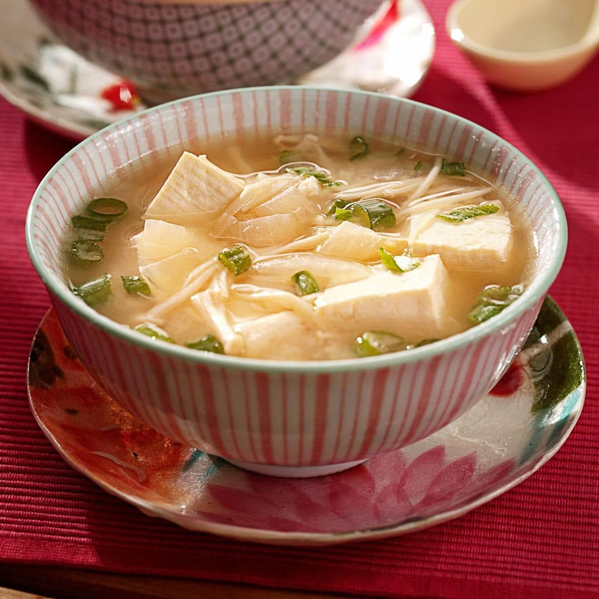

Miso Soup as my wife taught me

A quick, easy and hearthy soup to warm your body and soul
We really love Asian cuisine at home. But oftentimes the ingredients
are hard to come by or they are pricey.
Then many dishes need a long preparation and space which we don't have in our studio apartment.
Because of the "issues" above, miso soup has become one of the staples in our household.
It is done in 15 minutes maximum, the ingredients are cheap, and it fills you up. Miso soup is a simple meal, but this is what I appreciate the most about it.
Ingredients for 2 people
- 1 litre of water
- 3 gramms of bonito powder or bonito flakes
- 150 gramms of mushrooms of your choice
- 300 gramms of tofu (I use smoked tofu)
- 1 scallion
- Dried wakame (kelp)
- 2 tablespoons of white (shiro) miso
- Soy sauce (preferably light)
Preparation - 15 minutes
- Pour the water and the bonito flakes in a pan and start to heat it on medium.
- In the meantime wash and slice the mushrooms, the scallion and dice the tofu into cubes.
- When the water is almost boiling, put in the mushrooms and the white part of the scallion.
- When the water is boiling, it is time to put in the tofu.
- After the tofu, put 7-8 pieces of the dried wakame in the water. Wakame has a "fishy" flavour, so you might not want to eat it.
- By now your soup should be boiling. Put the miso paste in a small bowl and put a few spoonfuls of the hot broth over it.
With a whisker or chopsticks, stir the miso paste into the broth until it has no clumps.
Once you have diluted the miso in the bowl, pour the mixture into the pot and let it boil for 2 more minutes.
- This step is optional. At this point I usually put a tablespoon of soy sauce in the broth. But this can be done individually as well once served.
- Turn off the stove and serve the soup. Chop the green part of the scallion and sprinkle it on top of the soup in the bowls.
Itadakimasu!
Home